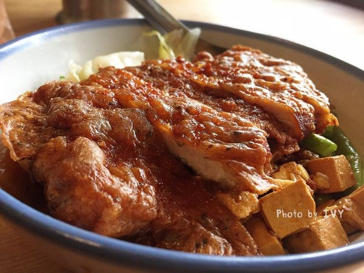

東道飲食亭
google評價：3.9★
店家資訊
地址：新北市三峽區仁愛街7號
營業時間：中午11:00至晚上8:00，星期二休息
店家電話：02-8671-5692

推薦菜單
香噴噴滷肉飯大40元小30元 滷肉飯便當70元
古早味排骨飯90元 古早味控肉飯90元
豬腳麵線90元 紅油乾辣麵60元 肉燥麵45元
麻辣臭豆腐150元 香滷桂竹筍100元
虱目魚湯60元 筍仔湯(季節限定)50元
花生豬腳80元 酥炸銀絲卷50元 白菜滷45元
麵茶粉圓冰40元 蜂蜜檸檬汁40元 粉圓奶茶40元
顧客評論
一家外表和店內氛圍都很復古的有名排骨飯，很多人都推薦他的排骨。他的排骨飯是用三峽在地的黑豬肉入料，排骨非常後，逼近一公分，咬下去口感很扎實，而且吃了之後肉不會過乾，咀嚼後還會有胡椒的香氣，米粒也煮的粒粒分明，味道把滷汁吸的很飽滿，旁邊配上酸菜和榨菜，都不會有吃起來反而很精緻。